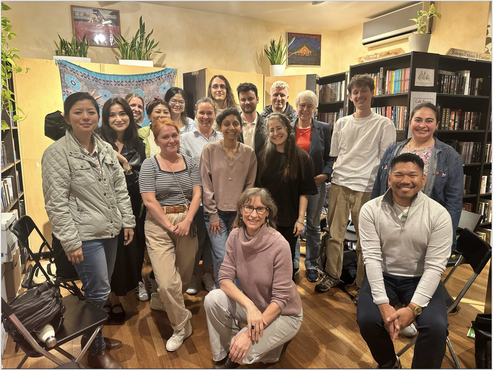

Creative Writing at The Munich Readery
Alongside science writing, I have been developing my creative writing practice through workshops and community writing sessions at The Munich Readery in Munich. I take part in guided workshops exploring prompts, journaling, creativity, voice, place and narrative, as well as informal sessions where participants meet simply to write together. These gatherings have become a regular space for experimenting with different forms of writing, sharing work when we choose to, and keeping a consistent writing practice outside my scientific work.
